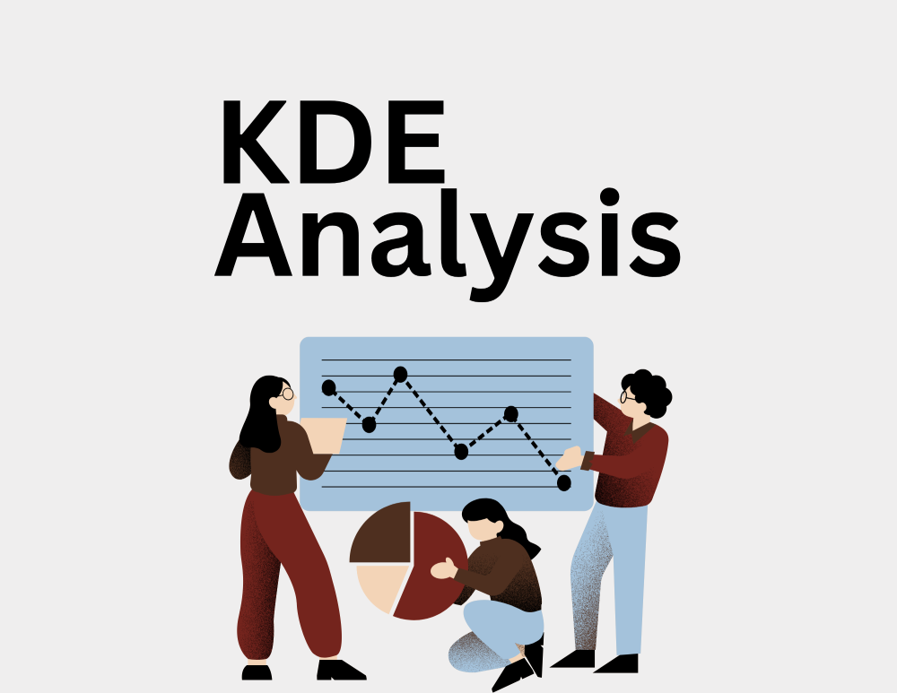
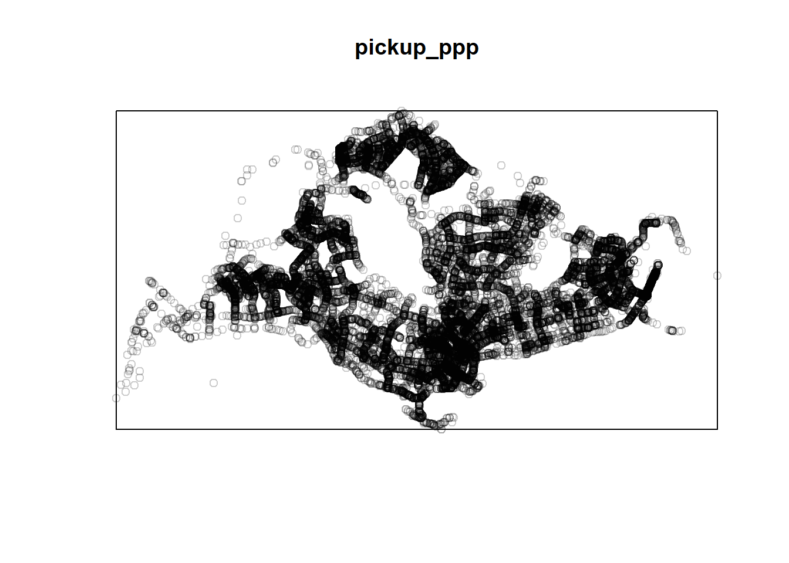
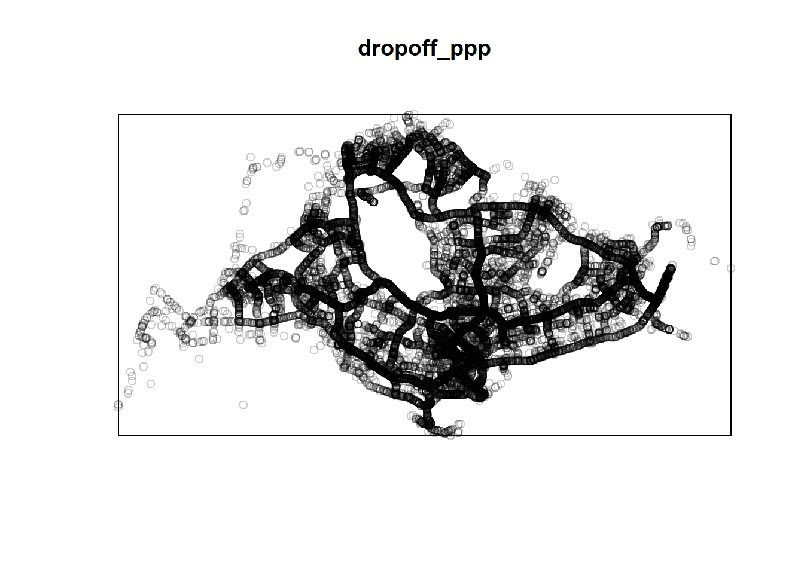
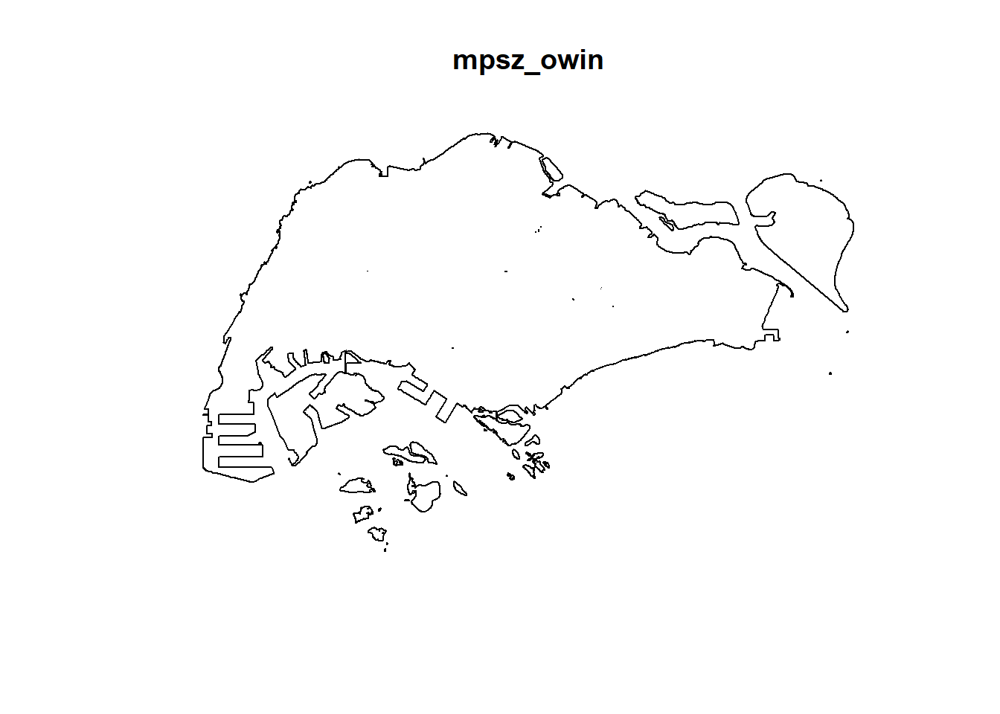
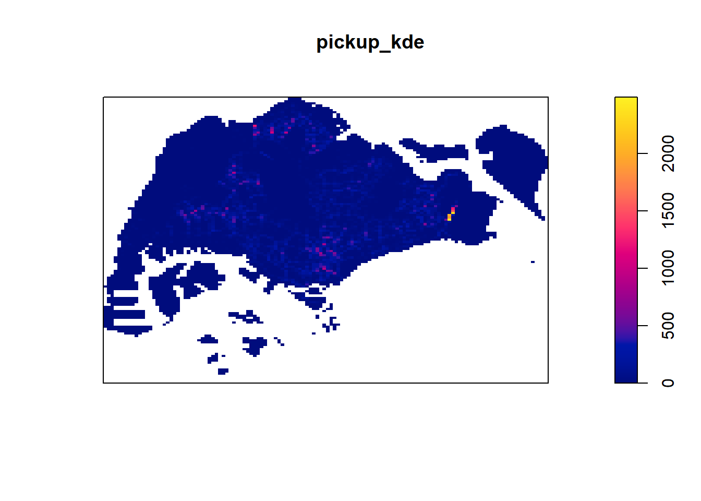

pacman::p_load(sf, sp, tidyverse, spatstat, tmap)KDE Analysis (1)

Getting Started
The code chunk below uses p_load() function of pacman package to check if the required packages have been installed on the computer. If they are, the packages will be launched.
The packages used are:
- sf package is used for importing, managing, and processing geospatial data.
- tidyverse package for aspatial data wrangling.
- spatstat package to perform 1st-order spatial point patterns analysis and derive kernel density estimation (KDE) layer.
In the code chunk below, the cleaned data files are loaded into R.
# Load base map
mpsz = st_read(dsn = "../data/geospatial",
layer = "MPSZ-2019") %>%
st_transform(crs = 3414)Reading layer `MPSZ-2019' from data source
`C:\magdalenecjw\Capstone\Analysis\data\geospatial' using driver `ESRI Shapefile'
Simple feature collection with 332 features and 6 fields
Geometry type: MULTIPOLYGON
Dimension: XY
Bounding box: xmin: 103.6057 ymin: 1.158699 xmax: 104.0885 ymax: 1.470775
Geodetic CRS: WGS 84# Load rds file
pickup_sf <- st_as_sf(read_rds("../data/rds/pickup_sf.rds"))
dropoff_sf <- st_as_sf(read_rds("../data/rds/dropoff_sf.rds"))Convert Pickup and Dropoff location sf dataframes into spatstat’s ppp object format
Convert the sf dataframe to a ppp object using as.ppp() function from the spatstat package. The result is a marked planar point pattern. To change a marked planar point pattern to just a planar point pattern, simply remove the marks associated with each point using marks(pickup_ppp) <- NULL.
pickup_ppp <- as.ppp(pickup_sf)
marks(pickup_ppp) <- NULL
plot(pickup_ppp)
dropoff_ppp <- as.ppp(dropoff_sf)
marks(dropoff_ppp) <- NULL
plot(dropoff_ppp)
# Create border of Singapore's land area
mpsz_border <- st_cast(mpsz %>%
summarize(), "POLYGON")
# Convert the resulting sf object to an owin object
mpsz_owin <- as.owin(mpsz_border)
plot(mpsz_owin)
pickup_owin = pickup_ppp[mpsz_owin]
pickup_owin <- rescale(pickup_owin, 1000, "km")
pickup_kde <- density(pickup_owin, sigma=bw.diggle, edge=TRUE, kernel="gaussian")
plot(pickup_kde)
dropoff_owin = dropoff_ppp[mpsz_owin]
dropoff_owin <- rescale(dropoff_owin, 1000, "km")
dropoff_kde <- density(dropoff_owin, sigma=bw.diggle, edge=TRUE, kernel="gaussian")
plot(dropoff_kde)